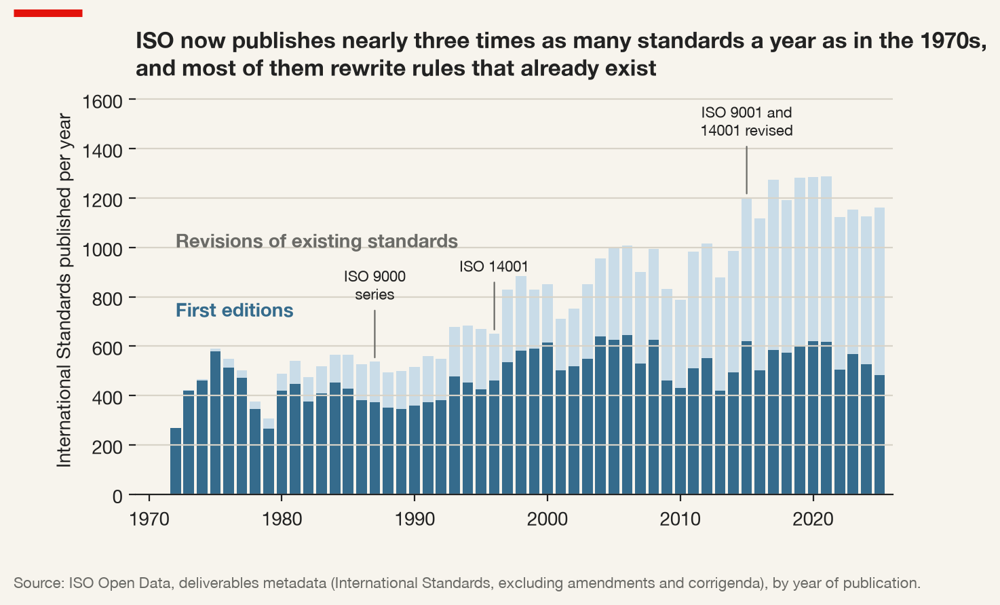
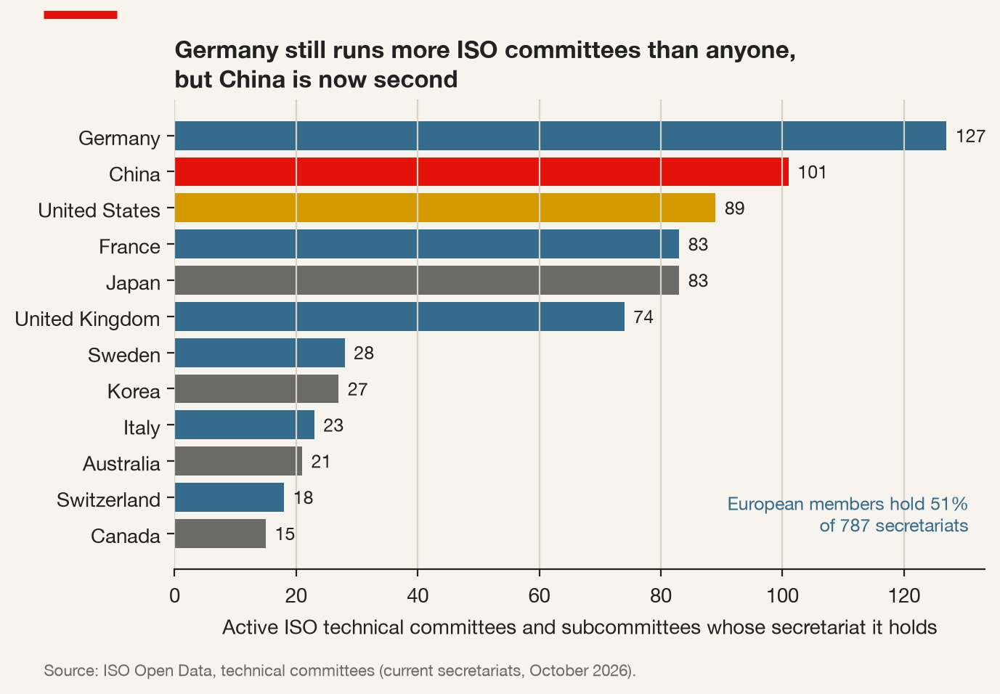
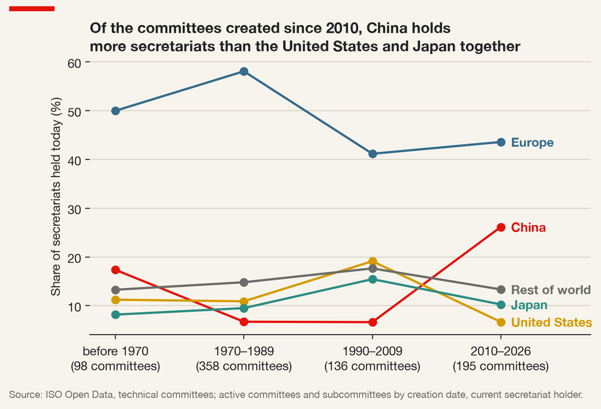
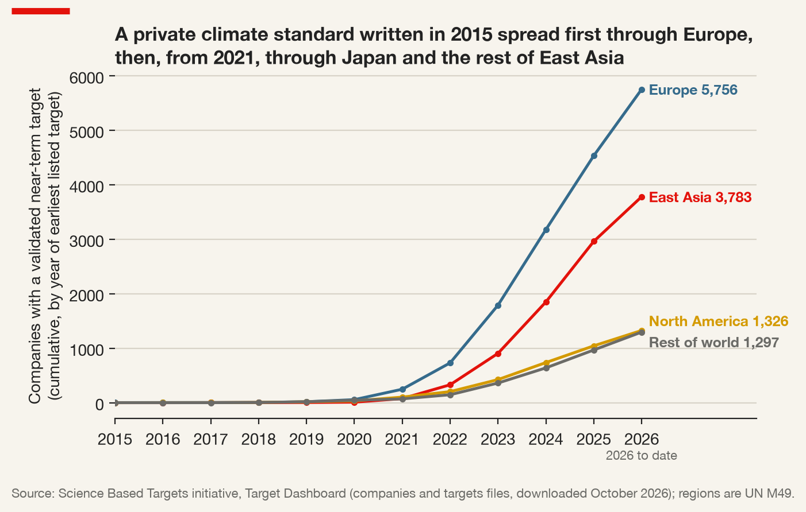
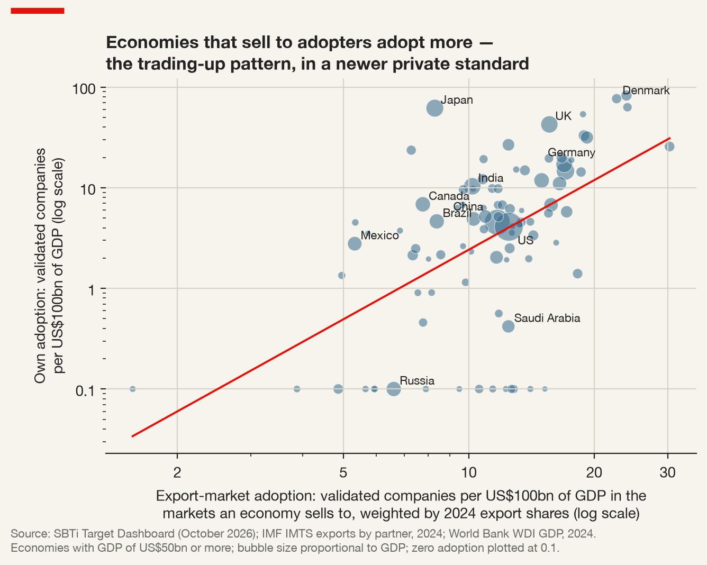

6 Private Authority, Standards and Global Regulation: Who Writes the Rules Firms Obey
6.1 Count the rules in a telephone
Pick up a mobile phone and ask how many rules it obeys. Its radio speaks a language specified by 3GPP, a partnership of standards organisations in which the engineers of competing telecommunications firms draft the technical specifications for each generation of mobile networks. Its wireless connection follows a family of specifications developed under the IEEE, a professional association of engineers. Its charging port follows a specification written by an industry forum. The factory that assembled it is probably certified to ISO 9001 for quality management and ISO 14001 for environmental management; its data centre partners to ISO/IEC 27001 for information security. The company that sold it reports its emissions under the Greenhouse Gas Protocol, a standard developed by a research institute and a business council, and its suppliers of tin, tantalum, tungsten and gold carry out due diligence on conflict minerals under frameworks developed by an intergovernmental organisation and audited by private firms.
Now ask how many of those rules were written by a government. Very few, and in most cases none. Some have since been made compulsory or referenced in procurement and trade law, but they were drafted and revised by engineers, auditors, industry associations and non-governmental organisations. The multinational that sells the phone spends far more of its compliance effort on these rules than on any treaty.
The quantity of such rules can be counted, at least for the largest body that writes them. ISO publishes its catalogue as open data: every document, with its type, edition and date (International Organization for Standardization 2026). From 1972, the first year the catalogue records International Standards as such, to 1979, ISO published about 436 a year; between 2020 and 2025 it published about 1,190 — nearly three times as many (Figure 6.1). Some 21,500 are in force, before counting ISO’s other documents or the output of the IEC, the ITU and the industry consortia.

The composition has changed as much as the volume. In the 1990s a third of the standards ISO published (32 per cent) were new editions of existing ones; since 2020, 53 per cent. Both management-system standards discussed below were revised again in 2026. Compliance is a subscription, not a state, and whoever sits on the committee doing the rewriting holds the rules continuously — which is why the question of who sits there matters.
Chapter 5 looked at intergovernmental institutions — the organisations states build and in which states vote. This chapter is about the other half of global governance, the rules that come from somewhere other than states, and about why that half is increasingly geopolitical.
Private authority — the capacity of non-state actors (firms, industry associations, standards bodies, non-governmental organisations) to make rules that others treat as binding, even though no state has enacted them and no court may enforce them directly.
For a multinational, private authority is two things at once. It is a risk: a standard written elsewhere, by actors the firm does not control, can become a condition of access to a market. And it is a lever: a firm that shapes a standard shapes the market the standard governs, and may write its own technology, its own processes and its own costs into the rules its competitors must follow. The question this chapter asks is therefore twofold: who writes the rules a multinational actually follows, and with whose power — and does trade spread those rules up or down?
6.3 The governance triangle
If rules can come from states, firms and NGOs, it helps to have a map. Kenneth Abbott and Duncan Snidal provide one (Abbott and Snidal 2009). They study what they call regulatory standards-setting schemes — arrangements that write standards for business conduct, monitor compliance, and sometimes certify it — and place each scheme in a triangle whose three corners are the three types of actor that can write rules.
Regulatory standards-setting (RSS) scheme — in Abbott and Snidal’s terms, an arrangement through which states, firms, NGOs or combinations of them set standards for the conduct of firms, and often monitor or certify compliance. Its position in the governance triangle is given by the share each of the three actor types has in its governance.
Schemes near a corner are run by one type of actor. An industry code of conduct, drafted by firms for firms, sits near the firm corner. A certification scheme created by an activist organisation sits near the NGO corner. A traditional intergovernmental rule sits near the state corner. Schemes in the interior are hybrids. The Forest Stewardship Council, founded in 1993, brings together environmental organisations, social organisations and firms in a multi-stakeholder structure, and sits on the edge between NGOs and firms. The UN Global Compact, launched in 2000 by the UN Secretary-General as a set of principles to which firms commit, brings states, firms and civil society together and is often placed near the centre. ISO itself is harder to place: its members are national standards bodies, some of them government agencies and many of them private associations whose committees are staffed largely by industry experts — which is why the placement of ISO standards is a matter of argument rather than of fact.
The triangle’s most important feature is not on the diagram. Abbott and Snidal stress the shadow of the state: even schemes run entirely by private actors are shaped by the possibility that states will regulate if private actors do not, and by states’ decisions to endorse, require, reference or ignore private schemes. Firms write codes of conduct partly to pre-empt legislation; NGOs create certification schemes partly because they have despaired of getting legislation; and states frequently pick up private standards and give them legal force, at which point the scheme moves across the triangle without a word of its text changing.
From the archive · Brussels, 2022
For years, mobile phones in Europe were sold with a variety of incompatible chargers. The European Commission encouraged manufacturers to converge voluntarily, and a memorandum of understanding among major producers in 2009 led much of the market towards a common connector — but not all of it, and not permanently, as connectors evolved and one large manufacturer kept its own.
Meanwhile an industry body, the USB Implementers Forum, had written the specification for a new reversible connector, USB Type-C. It was a private standard in the purest sense: drafted by firms, adopted voluntarily, and spreading because device makers found it convenient.
In 2022 the European Union adopted a directive amending its Radio Equipment Directive to require a common charging port (European Parliament and Council of the European Union 2022a). From the end of 2024, new mobile phones and a range of other portable devices sold in the EU had to charge through USB Type-C, with laptops following in 2026. A specification written by an industry forum became, by a single legislative act, a legal requirement for access to a market of several hundred million consumers. Because few manufacturers wish to design one version of a phone for Europe and another for everywhere else, the EU rule had consequences far beyond the EU.
In the governance triangle the specification did not change at all. What changed was its position: it moved from the firm corner towards the state corner, carried by the shadow of the state that had been hanging over it for more than a decade. And it illustrates in one case both of the chapter’s main arguments — that private standards can become conditions of market access, and that the jurisdiction which turns them into law extends its rules well beyond its borders.
For a firm, the triangle is useful because a scheme’s position predicts its behaviour. A scheme near the firm corner is easier for firms to change, and correspondingly less trusted by NGOs and regulators. A scheme with strong NGO participation is more legitimate in the eyes of activist consumers and harder for any single firm to steer. A scheme that a state has begun to reference in law is a scheme that may become mandatory, and a firm that ignores it is betting against the shadow.
6.4 Who writes an international standard?
The triangle tells us what kinds of actor write rules. It does not tell us whose rules win when actors from different countries meet in the same room. That is the question Walter Mattli and Tim Büthe ask of the two principal international standards bodies for products, ISO and the International Electrotechnical Commission (Mattli and Büthe 2003).
Some institutional background makes the question concrete. ISO was founded in 1947, and its members are national standards bodies — one per country. Standards are drafted in technical committees and their subcommittees and working groups, where experts nominated by the national bodies — overwhelmingly engineers employed by firms — negotiate the text. Each national body takes positions on drafts and votes on them. The process looks consensual and technical, and in one sense it is. But the experts who sit at the table, the national positions they carry, and the timing with which they bring proposals all determine whose existing practice becomes the international standard. A firm whose product already conforms to the standard that emerges has a head start; a firm whose product does not must redesign.
Mattli and Büthe compare three explanations of who wins. On the first, technological rationality, the technically best solution wins whoever proposes it — the engineers’ view of themselves. On the second, the primacy of power, the standard favours the states with the largest markets — the realist’s view of everything. Mattli and Büthe argue for a third.
Institutional complementarity — in Mattli and Büthe’s account, the fit between a country’s domestic standard-setting institutions and those of the international body. A hierarchical, coordinated national system, which speaks with one voice and passes information efficiently between firms and the national delegation, matches the structure of ISO and IEC and wins more influence than a fragmented, decentralised one, regardless of market size.
Their evidence pointed to the advantage of the European national standards bodies, which are hierarchical and coordinated, over the fragmented, decentralised system of the United States, in which many private standards developers compete and no single body aggregates national preferences. The result was striking because it cut against the realist expectation: the country with the largest market was not the most effective at shaping international product standards. Influence over “technical” rules depends on how a country and its firms are organised to take part, not only on how big they are. Büthe and Mattli (2011) later generalised the argument to accounting standards as well as product standards, showing that the same logic of institutional fit shapes who wins in the private bodies that write rules for global financial reporting.
The lesson for a firm is practical and somewhat uncomfortable. Participation is costly — it takes the time of senior engineers over years — and its benefits are diffuse and delayed. It is easy to conclude that someone else will look after the standard. But if a competitor’s national standards body is better organised than one’s own, and that competitor’s engineers are in the room, the standard will reflect their technology, and the firm that stayed away will pay to comply with it. In standards, absence is a decision.
6.5 Counting the rule-writers
Influence in a standards committee is hard to observe, but one part of it is visible. Every ISO technical committee and subcommittee is administered by a secretariat: a national member body that volunteers to run it, supplies the committee manager, circulates drafts and organises ballots. It gains no extra vote — ISO’s rule is one member, one vote — but it holds the pen, the calendar and often the first draft. And it pays: a body that holds many secretariats has shown that it, or the industry behind it, will fund staff and meetings year after year, which is exactly the capacity the institutional-complementarity argument says wins influence.
ISO’s open data list, for each of its 787 active committees and subcommittees, the secretariat, the date of creation and the participating members — those committed to vote on every draft, as distinct from observers (International Organization for Standardization 2026). Secretariats are strikingly concentrated (Figure 6.2). Six bodies — Germany’s DIN, China’s SAC, the American ANSI, France’s AFNOR, Japan’s JISC and the British BSI — hold 71 per cent. Germany alone holds 127. European members, counting the EU, EFTA and the United Kingdom, hold 51 per cent, from about 22 per cent of world GDP: the institutional-complementarity argument in a single comparison.

Table 6.1 separates participation, which is cheap, from administration, which is not. Korea, India and Russia take part in almost as many committees as Germany but hold 7 to 27 secretariats. The United States, with a quarter of world GDP, holds fewer than Germany, whose economy is a sixth of its size — the pattern Mattli and Büthe described, still intact: America’s many competing standards developers convert economic weight into ISO leadership less efficiently than Europe’s centralised bodies.
| Member body | Country | Secretariats | Share of secretariats (%) | Participating memberships | Share of world GDP, 2024 (%) |
|---|---|---|---|---|---|
| DIN | Germany | 127 | 16.1 | 714 | 4.2 |
| SAC | China | 101 | 12.8 | 777 | 16.9 |
| ANSI | United States | 89 | 11.3 | 564 | 26.5 |
| AFNOR | France | 83 | 10.5 | 652 | 2.9 |
| JISC | Japan | 83 | 10.5 | 666 | 3.8 |
| BSI | United Kingdom | 74 | 9.4 | 692 | 3.3 |
| KATS | Korea | 27 | 3.4 | 612 | 1.7 |
| BIS | India | 14 | 1.8 | 593 | 3.4 |
| GOST R | Russia | 7 | 0.9 | 643 | 2.0 |
| ABNT | Brazil | 3 | 0.4 | 261 | 2.0 |
The member whose position has changed is China. SAC is a participating member of 777 committees, more than any other body, and holds 101 secretariats, more than the United States. The data record only today’s holder, not the history of transfers, but they record when each committee was created, and holders by vintage tell the story almost as well (Figure 6.3). Of the committees created between 1970 and 2009, China holds 7 per cent; of the 195 created since 2010, 26 per cent — more than the United States and Japan together.

The committees themselves are more revealing. China holds the new committees on rare earths (created in 2015) and lithium (2020), the raw materials at the centre of the geopolitics of magnets and batteries, as well as biogas, coalbed methane and e-commerce. It also holds 17 of ISO’s oldest committees, created between 1947 and 1969 — screw threads, ships, textiles, plastics, cranes — taken over as earlier holders withdrew. One pattern stakes out fields where Chinese industry is strong and the rules are unwritten; the other takes over the administration of mature industrial standards. Both are what institutional capacity looks like when a government funds it.
Three cautions apply. ISO is one body among several: secretariats there say nothing about the IEC, the ITU or 3GPP, where the strategic stakes in telecommunications are highest. A subcommittee on chains and sprockets counts the same as one on information security. And administering a committee is not winning its arguments: Rühlig (2023) argues that counts of secretariats and proposals overstate Chinese influence, which depends on the quality of contributions and the bodies’ rules, and that the visible hand of the state in Chinese delegations breeds suspicion as well as strength.
6.6 Standards as geopolitics
For most of the post-war period, the politics of standards was the politics of firms and of national standards bodies, and it rarely reached foreign ministries. That has changed. The competition over telecommunications standards, over battery and charging standards, over the rules for artificial intelligence and for the flow of data, has become a competition between blocs, each trying to make its domestic rules the world’s.
Standards confer advantages that outlast the meeting at which they were agreed. A standard that incorporates patented technology generates licence revenue for as long as it is used; one that matches a country’s industrial practice lowers its firms’ costs and raises its competitors’; one that embeds choices about data access or encryption shapes what governments can see. And standards are sticky, so early influence compounds. When governments came to see technical standards as a component of technological leadership, and technological leadership as a component of national power, standard-setting acquired the stakes of geopolitics — and the bodies in which standards are written, which had been designed for engineers, found themselves hosting a contest between states.
The European Union’s version of this contest has been described most fully by Anu Bradford as the Brussels effect (Bradford 2020). The EU rarely sets out to impose its rules on the world. It regulates its own market. But when a large market sets a strict rule, firms that sell in it face a choice: produce two versions of their product, one for the strict market and one for everyone else, or produce one version that meets the strictest rule and sell it everywhere. Where production cannot easily be divided — because of economies of scale, because the product is a single global platform, or because maintaining two compliance systems costs more than over-complying in lax markets — firms adopt the strict rule globally, and then often lobby their home governments to adopt it too, so that their less global competitors bear the same costs. Bradford identifies the conditions under which the effect operates: a large market, the regulatory capacity to write and enforce rules, a preference for strict rules, regulation of targets that cannot easily leave the market (consumers rather than mobile capital), and non-divisibility of production. Data protection, chemical safety, competition law and product standards are her main cases; the common charger is a small, clean example.
The Brussels effect is a mechanism of unilateral regulatory globalisation, but it shares a logic with private standards. In both cases, rules travel along the channels of trade, carried by firms. That shared logic is precisely what the evidence later in this chapter tests.
The contest has since become explicit. In Digital Empires Bradford extends the argument from a single regulator to a rivalry among three (Bradford 2023): an American model that leaves the governance of technology largely to markets and firms, a Chinese model in which the state directs technology to serve its own goals, and a European model that regulates in the name of individual rights. Each jurisdiction seeks to export its model, through its firms and its market, and the battles run vertically — between governments and the technology companies they regulate — as well as horizontally, between the jurisdictions themselves. The European Commission’s 2022 strategy on standardisation states the stakes in the language of geopolitics: the geopolitical landscape, it observes, “has significantly shifted in recent years”, and other actors “follow a much more assertive approach to international standardisation than the EU and have gained influence in international standardisation committees” (European Commission 2022). For a firm, the change is that the technical committee where its engineers sit has become a place where its home state’s interests are being pursued, whether or not the firm shares them.
The three jurisdictions have each written the contest into policy. The Chinese Communist Party’s Central Committee and the State Council issued a National Standardization Development Outline in October 2021 (Central Committee of the Communist Party of China and State Council 2021), with targets for Chinese participation in the leadership of international bodies. The European Union amended its standardisation regulation in 2022 so that decisions on European standards supporting EU law are taken only by the national standards bodies of the EU and the European Economic Area, removing the votes that non-European firms held in ETSI, the telecommunications standards institute (European Parliament and Council of the European Union 2022b). The United States published its first national standards strategy for critical and emerging technology in 2023 (The White House 2023). None of these writes a technical standard. All are about who will be in the room — the variable Mattli and Büthe identified, now pursued deliberately by states.
6.7 Of, by, as: what standards do to organisations
Standards are usually associated with stability and sameness: a standard exists so that things will be the same everywhere. Nils Brunsson, Andreas Rasche and David Seidl argue that this view misses most of what is interesting about them (Brunsson, Rasche, and Seidl 2012). They organise research on standards around three perspectives.
The first is standardisation of organisations: standards that tell firms how to be organised. ISO 9001 and ISO 14001 are the archetypes. They do not specify what a product must be like or how much pollution a plant may emit. They specify that a firm must have a management system — documented procedures, objectives, responsibilities, internal audits, management reviews and a commitment to continual improvement. The second is standardisation by organisations: the bodies that write standards, how they work, and how they compete with each other for adopters. The third is standardisation as organisation: standards as a way of organising markets and fields without formal hierarchy, coordinating the behaviour of thousands of firms that have no contract with each other and no common owner.
Their central point is that standards are dynamic. They are revised, contested, interpreted differently in different places, and — most important for anyone using certification as evidence — decoupled from practice.
Decoupling — the separation between the formal structures an organisation adopts to signal conformity to external expectations and the practices it actually follows. A firm certified to a management standard may change its documents and its audits while leaving its operations largely as they were.
The idea is older than the study of standards. Meyer and Rowan (1977) argued that organisations adopt formal structures because those structures are regarded as legitimate in their environment, not necessarily because they make the organisation more efficient, and that organisations protect themselves by decoupling those structures from the technical core of their work. A certificate can be a ceremony.
Whether ISO 14001 certificates are mostly ceremony is an empirical question, and the evidence is mixed in an informative way. Potoski and Prakash (2005) found that US facilities certified to ISO 14001 reduced their pollutant emissions somewhat more than comparable uncertified facilities — the standard’s “weak sword”, in their phrase, could still cut, because third-party audits and the reputational stakes of certification gave it some force. Christmann and Taylor (2006), studying firms in China, found that whether certification was implemented substantively or symbolically depended on the firm’s circumstances, and in particular on whether its customers monitored what it actually did. Certification backed by demanding buyers was more likely to change practice; certification sought only for its signal was more likely to be decoupled. The implication for a multinational is direct. If it relies on its suppliers’ certificates as evidence of environmental performance, the certificate’s value depends on whether anyone — the multinational included — looks behind it.
6.8 Agents and entrepreneurs
Private authority does not all arise in the same way, and its origin matters for how durable it is. Jessica Green draws the key distinction (Green 2013).
Delegated versus entrepreneurial private authority — delegated authority exists when states hand rule-making or implementation to private actors, who act as their agents; entrepreneurial authority exists when private actors create rules on their own initiative and others choose to adopt them.
Green’s field is carbon governance, and it supplies clean illustrations of both. Under the Clean Development Mechanism of the Kyoto Protocol, private bodies were accredited to validate and verify emission-reduction projects: they exercised authority that states had delegated to them, within rules states had written. The Greenhouse Gas Protocol, by contrast, was created by a research institute and a business council without any state mandate, and became the dominant framework for corporate carbon accounting because firms, investors and eventually regulators adopted it.
The distinction tells a firm what to watch. Delegated authority is as durable as the delegation: the state that handed it over can take it back, rewrite it or abolish the programme, and when the Kyoto mechanisms gave way to new arrangements under the Paris Agreement, the authority of the bodies that served them changed with them. Entrepreneurial authority is as strong as the number of its users. It grows through adoption and network effects, and it can be displaced by a competing standard that attracts more adopters — or captured by a state that writes it into law, at which point it becomes something closer to delegated authority after the fact.
Benjamin Cashore’s analysis of forest certification shows how entrepreneurial schemes gain the authority to make rules (Cashore 2002). He calls them non-state market-driven governance systems: they have no state backing, and their authority derives from the market — from retailers and consumers who demand certified products, and from the firms in the supply chain who must therefore decide whether to comply. The Forest Stewardship Council, created by environmental groups with stricter rules, was soon met by industry-backed schemes with laxer ones, and the competition between them became a contest over which would be accepted as legitimate by the buyers whose purchases conferred authority. Private authority, on this view, is not given; it is won, one supply chain at a time, and it can be lost the same way.
6.9 Race to the bottom, or trading up?
With the concepts in place, the chapter’s central question can be stated precisely. Trade intensifies competition among producers in different countries. Does that competition push standards down or up?
The worry is the race to the bottom. If firms can produce anywhere and sell everywhere, governments compete for investment and exports, and one way to compete is to lower the costs that regulation imposes. Environmental standards are an obvious candidate: lax rules make production cheaper, and countries that compete hard for exports may tolerate pollution that richer or less trade-dependent countries would not. The argument predicts that greater openness to trade will be associated with weaker environmental governance.
The alternative was named by David Vogel (Vogel 1995).
California effect — the tendency of trade to spread stricter rules from strict to less strict jurisdictions. When a large, rich market imposes demanding standards on the products sold in it, producers elsewhere who wish to sell there adopt those standards, and may then press their own governments to adopt them too. Trade becomes a mechanism of “trading up”.
The name comes from American environmental history. California, with severe air-quality problems and a large car market, set vehicle emission standards stricter than federal ones; manufacturers that wanted to sell in California built cars to meet them, and other states followed. Vogel contrasted it with the Delaware effect — the race to the bottom in corporate chartering law, in which American states competed to attract company registrations by offering laxer rules, and Delaware won. The two effects are not contradictory. They describe different regulatory targets. Where the rule governs a product that must cross a border to be sold, the importing market can impose it, and trade tends to spread strict rules upward. Where the rule governs a process or a legal form that can be relocated, jurisdictions compete for the mobile target, and trade can push rules down.
Environmental management standards sit in an interesting middle position. ISO 14001 governs a process — how a plant manages its environmental impacts — and not a product. No importing government can require it at the border. But buyers can, and that is where the question becomes empirical.
From the archive · Rio and Geneva, 1992–1996
ISO 14001 was born of a particular moment. In the run-up to the UN Conference on Environment and Development in Rio de Janeiro in 1992, business leaders organised to present a constructive business response to global environmental concerns, and international standardisation was one of the avenues they explored. ISO and the IEC set up an advisory group on the environment to consider whether international standards for environmental management were needed.
They were not starting from nothing. The British Standards Institution had published BS 7750, a national standard for environmental management systems, in 1992, building on the management-system model that the ISO 9000 quality standards, first published in 1987, had made familiar to firms worldwide. In 1993 the European Union adopted its own Eco-Management and Audit Scheme. ISO created a new technical committee for environmental management, TC 207, in 1993, and in 1996 it published ISO 14001.
The standard reflected its parentage. Like ISO 9001, it specified a management system rather than a performance level: a certified firm commits to comply with applicable law and to improve continually, but the standard sets no emission limit of its own. That design made it adoptable anywhere, by firms in any sector and any regulatory environment — and it made it, from the first, vulnerable to the charge that certification and performance could diverge. It was revised in 2004 and again in 2015, and it became the most widely adopted environmental management standard in the world.
The episode illustrates Mattli and Büthe’s argument in miniature. The international standard grew out of a European national standard and a European regulatory scheme, drafted in a committee where coordinated national bodies with a working model to propose were well placed to shape it. Firms in countries with that model already in place adopted the international standard more easily — a pattern documented by Delmas (2002), who traced how differences in institutional environments made adoption faster in Europe than in the United States.
Aseem Prakash and Matthew Potoski put the race-to-the-bottom hypothesis to a direct test (Prakash and Potoski 2006a). ISO 14001 is a useful instrument because it goes beyond what many domestic laws require, is adopted voluntarily, and is counted, country by country, every year. Using a panel of 108 countries over seven years, they asked whether a country’s adoption of ISO 14001 depends on adoption in its export markets — the countries to which it sells.
Their finding is that trade linkages encourage ISO 14001 adoption when a country’s major export markets have themselves adopted it. Exporters to markets where certification is widespread certify more; exporters to markets where it is rare do not. Trade, on this evidence, does not drive environmental governance down. It transmits the standards of customers to their suppliers — a California effect operating through private rather than public regulation, with buyers rather than governments doing the imposing. The argument was developed at book length in Prakash and Potoski (2006b), which treats voluntary programmes like ISO 14001 as “green clubs” whose value to members depends on the credibility of the club’s standards and the visibility of membership to outsiders.
The mechanism is consistent with earlier work on the diffusion of quality certification. Guler, Guillén, and Macpherson (2002) showed that ISO 9000 certificates spread across countries through trade and investment ties with countries where certification was already common, alongside the influence of states and of imitation among firms. Christmann and Taylor (2001) found, among firms in China, that environmental self-regulation was more likely where firms were linked to multinational owners or exported to developed-country customers. Across these studies the picture is consistent: private standards travel along supply chains, from buyer to supplier, and the supply chains themselves determine where they go.
Gereffi, Humphrey, and Sturgeon (2005) explain why: where buyer and supplier exchange complex information that is hard to codify, value chains become relational or captive, and lead firms specify not only the product but how it is made — exactly the chains through which process standards such as ISO 14001 travel.
For the firm, the conclusion is one of the most practical in this book. A private standard can become a de facto condition of access to a market without a single law changing. Monitoring “regulatory” risk therefore means monitoring not only what governments legislate but what one’s customers’ home markets adopt.
6.10 How a certificate becomes evidence
The classic source on certification is the ISO Survey of Management System Standard Certifications, which counts valid certificates by country and year. It counts certificates, not firms or sites; its coverage of certification bodies has changed across editions, so that a jump in one country in one year may reflect reporting rather than adoption; and from 2025 it is compiled from the IAF CertSearch database, a change of method that breaks the series where a reader would most like to extend it. A count is also not an adoption rate: a large economy has more certificates because it has more firms. Adoption must be normalised — by GDP, by the number of firms or by exports — and a finding that holds under only one denominator is a finding about the denominator.
The trade side requires a measure of export-market adoption: a weighted average of partners’ adoption rates, each partner weighted by its share of the country’s exports, built from bilateral trade data such as the IMF’s International Trade in Goods by partner country (International Monetary Fund 2026). The weighting is the substance of the argument. The California effect predicts that what matters is adoption among the markets a country actually sells to, in proportion to how much it sells to them; an unweighted average would give a country’s smallest customers as much influence as its largest.
The most instructive check is a placebo. ISO 9001 is demanded by buyers everywhere and has no environmental content. If its adoption tracks export-market adoption just as closely as ISO 14001 does, the pull may have little to do with environmental governance and much to do with supply chains demanding certificates in general. The finding of Guler, Guillén, and Macpherson (2002), that ISO 9000 certificates spread along trade ties, suggests the placebo would not come back empty. That would change what the finding means — from “trade spreads environmental governance” to “trade spreads certification”.
6.11 A newer club: science-based climate targets
The trading-up argument can be checked with a younger private standard whose register is public firm by firm, and which is the kind of rule multinationals now ask their suppliers to meet. The Science Based Targets initiative was launched in 2015 by CDP, the UN Global Compact, the World Resources Institute and WWF to assess whether companies’ emission-reduction targets are consistent with the goals of the Paris Agreement. A company submits a target and the initiative validates it, or does not, against criteria it writes itself. In Green’s terms its authority is purely entrepreneurial; like ISO 14001 it governs a process rather than a product; unlike the ISO Survey, its register lists every company, its country and the date of each target (Science Based Targets initiative 2026).
The register shows a private standard’s diffusion with unusual clarity (Figure 6.4). By October 2026, 12,162 companies had validated near-term targets; only 14 of them have a current target published before 2019. The take-off came in 2021–2023, and Europe led it, with 47 per cent of validated companies. But the largest national group is Japanese — 2,582 companies, more than the United Kingdom (1,569) or the United States (1,170) — and East Asia accounts for 31 per cent against North America’s 11. More than half the validated companies (55 per cent) are small and medium-sized enterprises, many of them suppliers whose targets were requested by their customers: the California effect in its private form.

The test is Prakash and Potoski’s. A country’s own adoption is its number of validated companies per US$100 billion of GDP; its export-market adoption is the same quantity for its trading partners, weighted by their shares of its 2024 merchandise exports (International Monetary Fund 2026; World Bank 2026). The sample is the 91 economies with GDP of at least US$50 billion.

The pattern is the one the trading-up argument predicts (Figure 6.5); the correlation in logarithms is 0.53. Denmark, with 77 validated companies per US$100 billion of GDP, sells to markets averaging 23; Russia, whose exports go mainly to markets with below-average adoption, has none. Table 6.2 confronts the relationship with its most obvious rival, income. Taken alone, a doubling of export-market adoption is associated with own adoption about five times higher (an elasticity of 2.3), and income per head alone explains slightly more of the variation. With both in the regression the export-market coefficient falls to 1.6 but remains more than four standard errors from zero.
| (1) Export markets | (2) Income | (3) Both | |
|---|---|---|---|
| Log export-market adoption | 2.30 (0.39) | 1.64 (0.36) | |
| Log GDP per head, 2024 | 0.83 (0.13) | 0.64 (0.12) | |
| R² | 0.28 | 0.33 | 0.45 |
| Economies | 91 | 91 | 91 |
The departures from the line are as instructive as its slope. Japan has 62 validated companies per US$100 billion of GDP while its export markets average 8: large manufacturers asked their supplier networks to set targets, and government programmes helped smaller firms do so. A coordinated domestic system carried the standard further than trade would have — Mattli and Büthe’s institutional argument appearing, unbidden, in a diffusion study. The United States and China sit together at about 4, with export markets averaging about 12: the two largest economies lag their customers, for reasons the data cannot separate. Saudi Arabia, whose customers adopt about as much as America’s, has almost none, and sixteen economies in the sample have no validated company at all, most of them exporters of oil, gas, metals or farm commodities. A barrel of oil carries no supplier code of conduct; the California effect needs a buyer who cares how a good was made.
The limits are those set out above, and some are sharper. A cross-section shows association, not cause. The measure counts companies, not emissions. And a validated target is a promise, not a reduction: Bjørn et al. (2023) argue that validation is not transparent enough for outsiders to judge how demanding targets are — decoupling again, at the level of the standard rather than the firm. The initiative’s authority has itself been contested: in 2024 a board statement that it would consider letting carbon credits count towards reductions (Science Based Targets initiative 2024) drew public objections, including from within the initiative, a reminder that an entrepreneurial standard’s legitimacy rests on its adopters’ trust. What the pattern shows is that buyers transmit the requirements they have accepted. A supplier’s regulatory future is being written in its customers’ markets.
6.13 A short review of the literature
The study of private authority in international political economy begins with Strange (1996), who argued that authority over economic outcomes had shifted from states to markets and firms, and with Cutler, Haufler, and Porter (1999) and Hall and Biersteker (2002), who gave the concept its name and extended it from inter-firm regimes to NGOs, rating agencies and other non-state actors. Abbott and Snidal (2009) organised the resulting landscape into the governance triangle and introduced the shadow of the state; Green (2013) distinguished delegated from entrepreneurial private authority and traced both in carbon governance; Cashore (2002) showed how non-state, market-driven schemes such as forest certification gain the authority to make rules through the purchasing decisions of firms and consumers.
The politics of who writes international standards is the subject of Mattli and Büthe (2003), whose argument for institutional complementarity over technological rationality and raw power was generalised in Büthe and Mattli (2011) to the private regulation of products and financial reporting. Bradford (2020) documented the unilateral mechanism by which strict EU rules become global through firms’ preference for a single production standard, and Bradford (2023) extended it to a three-way contest over the regulation of technology; the EU’s common-charger directive (European Parliament and Council of the European Union 2022a) is a recent and transparent instance of a private specification hardened into law.
On standards as organisation, Brunsson, Rasche, and Seidl (2012) set out the three perspectives — of, by and as organisation — and the dynamism of standards in practice, drawing on the institutionalist insight of Meyer and Rowan (1977) that formal structure may be decoupled from activity. Whether ISO 14001 changes behaviour is addressed by Potoski and Prakash (2005), who find modest emission reductions among certified US facilities, and by Christmann and Taylor (2006), who show that substantive rather than symbolic implementation depends on monitoring by customers.
On the race to the bottom, Vogel (1995) named the California effect and set it against the Delaware effect. Prakash and Potoski (2006a) provided the cross-national test at the centre of this chapter, finding that trade spreads ISO 14001 from export markets to exporters, and Prakash and Potoski (2006b) developed the theory of voluntary programmes as clubs. The diffusion mechanism is corroborated for quality standards by Guler, Guillén, and Macpherson (2002), for Chinese firms by Christmann and Taylor (2001), and for the differing paths of Europe and the United States by Delmas (2002), and explained by the value-chain governance of Gereffi, Humphrey, and Sturgeon (2005). Rühlig (2023) weighs China’s rise in standardisation; Bjørn et al. (2023) raise decoupling for climate targets. The through-line is that private rules travel along supply chains, and that the power to write them lies with those organised to take part.
6.14 What the evidence does not license
Suppose the evidence comes out as Prakash and Potoski’s argument predicts: countries whose export markets certify heavily certify more themselves. That is not yet proof that trade spreads environmental governance.
The cross-country pattern is a correlation before it is a test. Countries whose export markets certify heavily are richer, more industrialised and more embedded in multinational supply chains than others, and any of those differences could produce the pattern on its own; a panel model controls for some of them, a scatter for none. Certificates are not performance: the evidence on decoupling says that a certified plant may or may not pollute less than an uncertified one, and the counts say nothing about which. The data carry the scars of their collection, and the measure depends on choices of denominator and weighting.
The evidence therefore does not license the conclusion that a certified supplier is environmentally better than an uncertified one, that certification caused a country’s export success, that a standard voluntary today will stay voluntary, or that the rules a firm’s markets follow were written by anyone the firm can vote for. What it does license is the chapter’s central claim about authority. Rules that no legislature enacted travel along supply chains, from buyer to supplier, with the force of market access behind them; the bodies that write them reward those organised to take part; and states, increasingly conscious of the stakes, are moving to capture both the bodies and the rules. A multinational that treats standards as a technical matter for its engineers and its quality department has misread where authority lies. Every time it decides whether to adopt, shape or resist a rule it did not write, it is making a judgement about power.